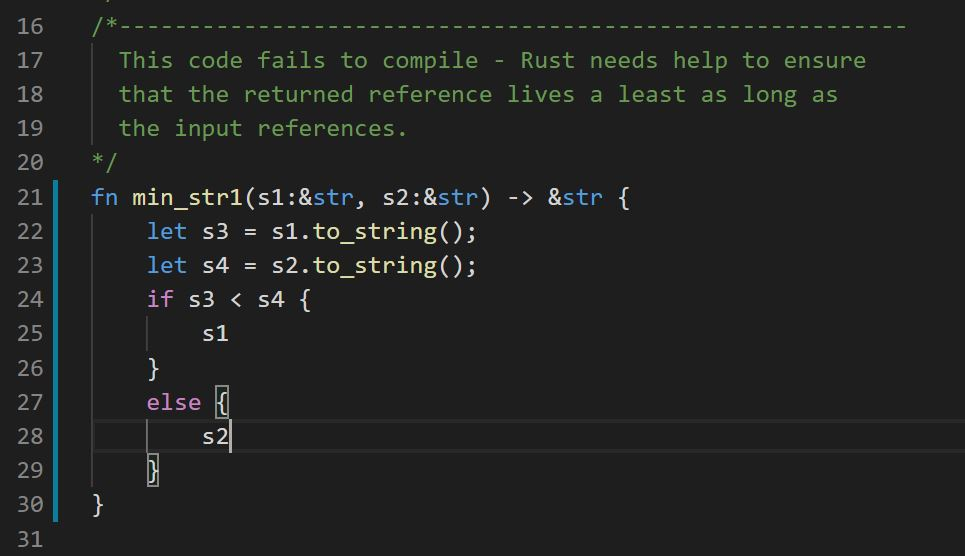
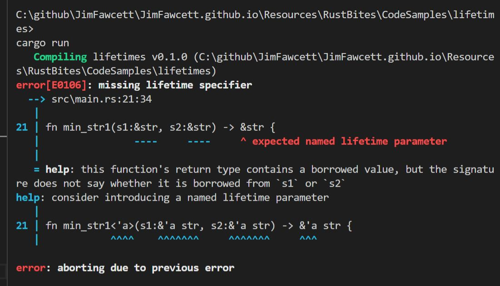
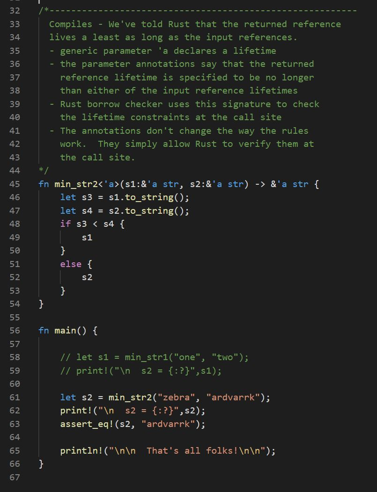
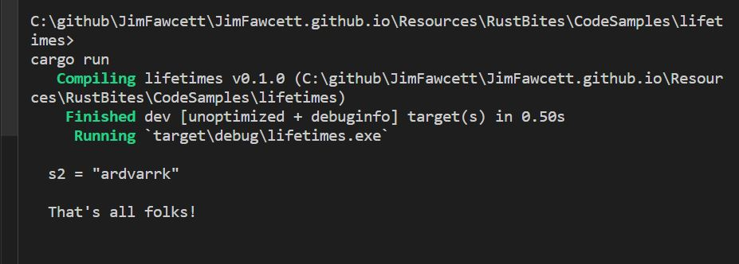

The rust borrow checker is designed to ensure that no reference outlives its referend.
For most Rust code, that is done implicitly, using static analysis of program scopes.
However, there are a few cases where the analysis is too expensive, and Rust depends on
help from the developer in the form of lifetime annotations.
Annotations are declared as generic parameters where the first character of the parameter
name is a tick mark ('), e.g., 'a. In most Rust code, the only place they are
required is for functions that return a reference (to non-local data). The annotation
syntax is shown below:
This syntax specifies that lifetime of the returned reference shall be no
longer than the lifetimes of either x or y. Rust then uses this signature to
check lifetimes at the call site.
The example below illustrates code that needs lifetime annotation but does not
supply it, and compiler error messages that result.
Example: Lifetime Annotation Required


The next example shows results when annotations are supplied.
Example: Lifetime Annotation


One place that lifetime annotation is often needed is when you build pluggin architectures or use
callbacks. You will find a practical example of that here:
Another place where lifetime errors occur is when you attempt to construct asynchronous
methods for a user defined type. Rust will not allow a direct reference to member data
because there is no way to ensure that the thread will not outlive it's host instance, so
any references to the host's data is rejected by the compiler.
It is possible, using careful construction, to build user-defined types with asynchronous methods by
being careful to use clones of the member data that are owned by the thread. You can find
examples of that in the Hacks and Helpers bite.